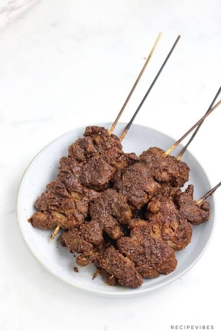

Our Kitchen Gallery
A little taste of what we cook and create. Discover the rich flavors of Nigerian cuisine.

Jollof Rice
A classic Nigerian dish — rich, flavorful, and loved across West Africa.

Suya
Spicy grilled meat skewers, a popular street food across Nigeria.
Moi-Moi
Steamed bean pudding, a protein-rich delicacy enjoyed at parties and family gatherings.

Pounded Yam & Egusi Soup
A hearty meal featuring melon seed soup with assorted meats and vegetables.

Pepper Soup
Spicy broth with assorted meat — a warming dish perfect for any occasion.

Amala & Ewedu Soup
A traditional Yoruba dish made from yam flour and jute leaves, served with stew.
🍝 Different recipes. Better meals. Stronger tomorrow.